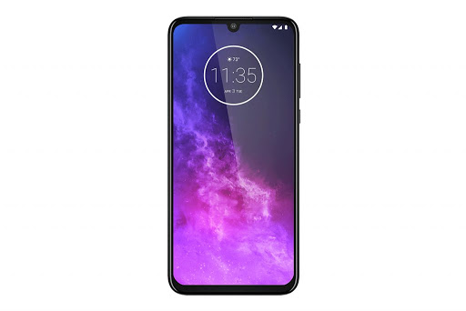
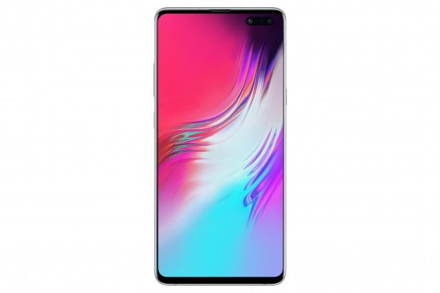
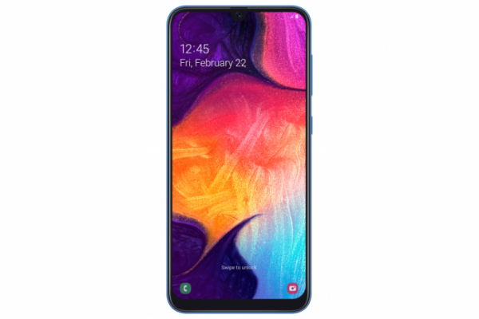

역사
최초의 스마트폰은 1992년 IBM이 개발한 ‘사이먼(Simon)’으로 1993년 일반 대중에게 공개되었으며 1996년 노키아에서 휴대전화 상품에 휴렛팩커드의 PDA를 결합하여 스마트폰을 출시하는 등 다양한 시도가 있어왔으나 너무 비싼 가격 등을 이유로 대중화에 어려움이 있었다.
스마트폰은 컴퓨터를 결합한 무선 휴대전화기이다. PC에서 실행되는 운영체제보다 작게 만든 모바일 운영체제를 탑재하여 인터넷 검색, 전자우편, 간단한 문서 편집, 카메라, 오디오 및 비디오 재생 등 PC의 기능을 거의 모두 갖추고 있다.
최초의 스마트폰은 1992년 IBM이 개발한 ‘사이먼(Simon)’으로 1993년 일반 대중에게 공개되었으며 1996년 노키아에서 휴대전화 상품에 휴렛팩커드의 PDA를 결합하여 스마트폰을 출시하는 등 다양한 시도가 있어왔으나 너무 비싼 가격 등을 이유로 대중화에 어려움이 있었다.
안드로이드가 다른 휴대폰 운영체제인 애플의 'iOS', 마이크로소프트의 '윈도 모바일', 노키아의 '심비안'과 차별화되는 것은 완전 개방형 플랫폼이라는 점이다. 종전에는 휴대폰 제조업체와 서비스업체마다 운영체제가 달라 개별적으로 응용프로그램을 만들어야 하였다.
iPhone 1세대는 2007년 1월 9일 <맥월드 2007>을 통해 최초로 발표되었다. 출시 초기만 해도 Apple사의 기행 정도로 여겨졌으나 곧 대대적인 성공을 거둬 전세계적으로 스마트폰 열풍이 몰아치게 되었다.
|  |  |  |